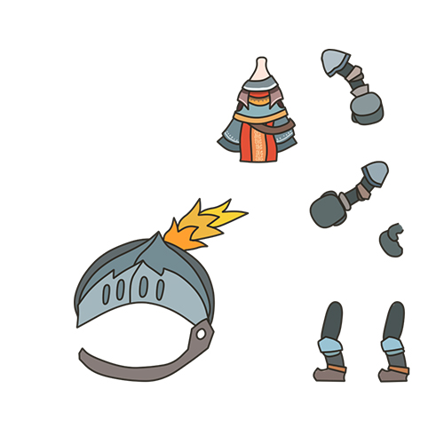
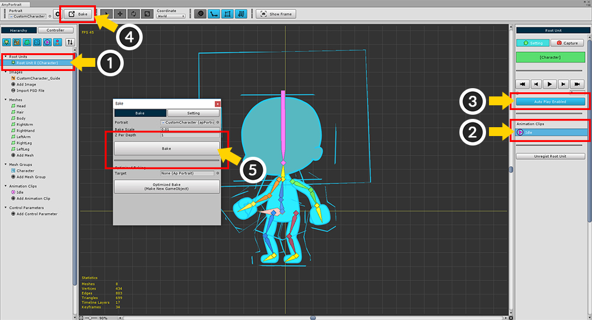

AnyPortrait > Manual > Replace a character's costume
Replace a character's costume
1.1.0
Changing a character's clothing or equipment when a player gains an item from a game is a basic function.
There are many ways to implement the ability to replace a character's costume.
There is a way to create and replace all the clothes and equipment animations individually, or simply change the color or texture.
This page shows how to use AnyPortrait to simply replace the costume of a character through "texture replacement".
It also covers how to implement the ability of a character to wear swords and shields using Sockets and scripts.
Preparing Atlas Textures configured with the same way

In order to create an example of replacing a character's costumes, I have prepared the above images.
The first figure is a basic state in which the character does not wear any clothes.
The second figure is about what the character wears a casual outfit and orange hair.
In the third figure, the character is dressed as a knight in steel equipment, holding a sword and a shield.
I want to change the costumes so that the characters have a various appearance.
In this page, we want to change the appearance by implementing the function to change the texture of each mesh in real time.
This method is simple, but with the following precautions.
- Atlas of all textures must be configured identically.
- The "Import PSD file" function creates Atlas automatically, so can not be used here.
- The size and shape of the image vary, so make it fairly large when creating meshes.
- If there is a costume that does not share physic materials or bones, you must create another mesh in advance.
- Although not applicable to basic costumes, you need to add more bones for various costumes.
- If you replace the texture, Drawcall may increase.
In accordance with the above instructions, you need to prepare a "reference character" as shown in the fourth figure.
The reference character has "basic appearance" and "size of image of costume that can be replaced later".



These four character texture Atlas are completed according to the above notes.
I separated the head and hair areas and separated also the body, arms, and legs.
Sword and shield are not included in the Atlas.
Creating meshes using the reference character texture

Open the AnyPortrait editor and create a new character.
Select the "Reference Character" texture from the prepared texture and add it as an image.

Now create the meshes one by one.
Unlike the normal mesh creation process, the reference character mesh should be configured as shown below.
Generally, a mesh will be made to fit the shape of the image, such as a "Red Area (Basic Area)".
However, we do not know the size of any image to be changed, so we need to make the mesh as moderately larger as the "Green Area (Maximum Area)".

I created other meshes in the same way.
You can see that many vertices have been added in joints.
If there are many vertices in the mesh, it is necessary to modify the Z-Depth value of the vertex according to the image and motion. (Related page)
Creating the Reference Character

(1) Create a Mesh Group.
(2) Set the name of the Mesh Group and set it as Root Unit.
(3) Press the "+" button, and (4) add meshes.

(1) Press the "Edit Default Transform" button.
(2) Modify the position of meshes.
(3) Change the order of mesh appropriately.
When you are finished, press the "Edit Default Transform" button (or the "Editing.." button) again to finish editing.
You can test if your reference character is well-formed.
(1) Select the image.
(2) Press the "Select Image" button.
(3) Select a character texture other than the reference texture.

The current image has been changed to a basic character texture, not a reference.

If you select the Mesh Group again, you can see that the texture has been replaced and the character's appearance is changed.
If Atlas is configured in the same way, you can change the look by replacing only the textures as shown above.
This process is for testing, so change to reference character texture again.
(I will use this basic character texture later, but it is convenient to use reference textures at this stage.)

Add bones.
If you need to add bones depending on some costume to be replaced, you may want to add bones in this step.

(1) Select the "Modifier tab" and press the "Add Modifier" button.
(2) Select and add the Rigging modifier.
With the Rigging modifier selected, select each mesh to set the weights for the bones.
Carefully set weights because the mesh is bigger than it looks like an image.

Once you're done with the Rigging modifier, the next step is to create the animation using bones.
(1) Press the "Add Modifier" button.
(2) Select and add "Transform (Animation)" modifier.
(1) Create a new Animation clip.
(2) Set the name and Target Mesh Group, and click the "Add Timeline" button.
(3) Register the "Transform (Animation)" modifier as a timeline.

(1) Select the "Bones" tab.
(2) Press the "All Bones to Layers" button to register all bones as a timeline layer.

Select bones to create character animations.
(You do not have to create animations just by using bones. Create animations in a variety of ways.)

Now it's time to move the completed character animation to the Unity scene.
(1) Select the Root Unit.
(2) Select the Animation clip as the default.
(3) Turn on the "Auto Play" setting.
(4) Press the "Bake" button to open the Bake dialog.
(5) Press the "Bake" button on the Bake dialog box to close the AnyPortrait editor.
When you run the game in Unity, you can see that the animation of the reference character is played.
Writing a script to replace a character's costume
The next step is to create a script to implement the replacement of the character's costume.
Using keyboard input, let's implement the transition of "character is naked", "character is wearing casual clothes", and "character is wearing knight's equipment".
In particular, let's create a separate transition between the hair and other meshes.

If you have created all animations with reference characters, let's change the current texture to the texture of the basic.
(1) Select the image and (2) press the "Select Image" button to change it to "Basic Character Texture".
The texture is changed.
Bake again to apply to the Unity scene.

It has been changed to the character "Naked".
Now create a new C # script and write it like this:
public class CustomSample : MonoBehaviour
{
// The target apPortrait
public apPortrait portrait;
// Three character textures
public Texture2D image_Basic;
public Texture2D image_Casual;
public Texture2D image_Knight;
void Start () { }
void Update ()
{
// Pressing Q, A, or Z changes the texture of the "Hair" mesh.
if ( Input.GetKeyDown(KeyCode.Q) )
{
portrait.SetMeshImage( "Hair", image_Basic );
}
if ( Input.GetKeyDown(KeyCode.A) )
{
portrait.SetMeshImage( "Hair", image_Casual );
}
if ( Input.GetKeyDown(KeyCode.Z) )
{
portrait.SetMeshImage( "Hair", image_Knight );
}
// Pressing W, S, and X changes the texture of other meshes except "Hair" and "Head".
if ( Input.GetKeyDown(KeyCode.W) )
{
portrait.SetMeshImage( "Body", image_Basic );
portrait.SetMeshImage( "LeftArm", image_Basic );
portrait.SetMeshImage( "RightArm", image_Basic );
portrait.SetMeshImage( "RightHand", image_Basic );
portrait.SetMeshImage( "LeftLeg", image_Basic );
portrait.SetMeshImage( "RightLeg", image_Basic );
}
if ( Input.GetKeyDown(KeyCode.S) )
{
portrait.SetMeshImage( "Body", image_Casual) ;
portrait.SetMeshImage( "LeftArm", image_Casual );
portrait.SetMeshImage( "RightArm", image_Casual );
portrait.SetMeshImage( "RightHand", image_Casual );
portrait.SetMeshImage( "LeftLeg", image_Casual );
portrait.SetMeshImage( "RightLeg", image_Casual );
}
if ( Input.GetKeyDown(KeyCode.X) )
{
portrait.SetMeshImage( "Body", image_Knight );
portrait.SetMeshImage( "LeftArm", image_Knight );
portrait.SetMeshImage( "RightArm", image_Knight );
portrait.SetMeshImage( "RightHand", image_Knight );
portrait.SetMeshImage( "LeftLeg", image_Knight );
portrait.SetMeshImage( "RightLeg", image_Knight );
}
}
}
This is a simple code using apPortrait's "SetMeshImage" function. (Related page)
You can change the appearance of your character by entering the name of the mesh you want to change the texture and the texture asset.

Create a new GameObject and add the created script as a component.
Now assign the public member variables (one apPortrait and three Texture2Ds).

When you play the game, you can see that the character's clothes and hair change according to the keystrokes.
Using sockets to replace weapons or equipment
Some of the weapons and equipment that your character uses are those that do not change shape, so they are not affected by bones.
Such examples are weapons such as swords, shields, and guns.
And the hat on top of the head, small jewelry, glasses, etc. are usually not well deformed.
If you want to wear these kinds of items to your character, it is more effective to use a Socket.
Detailed description of socket can be seen from related page.
This page describes how to attach a sword to the character's right hand and attach a shield to his left arm.

Prepare images and materials for swords and shields, and create them as GameObjects using Quad mesh.

But there is one problem here.
The center of the image of the sword and shield is not "the location where it will be attached to the character".
Therefore, you need to create a "point to be attached to the character".
(1) Create a new GameObjects, respectively. I named them "Weapon_Shield" and "Weapon_Sword".
And set GameObjects with existing sword and shield mesh as children of new GameObjects.
(Be careful not to do reversely.)
(2) Modify the position of each mesh so that the position of the parent GameObject is the "attaching point".

(1) Open the AnyPortrait editor and select the Mesh Group.
(2) Add bones to where the sword and shield will be placed.
In this example, they are added to the right hand and left arm, respectively, and are named "Bone Weapon R" and "Bone Weapon L".
(3) Press the "Socket Disabled" button to turn on the socket option.
And Bake again.
Now add the following code to the existing script:
public class CustomSample : MonoBehaviour
{
// The target apPortrait
public apPortrait portrait;
// Three character textures
public Texture2D image_Basic;
public Texture2D image_Casual;
public Texture2D image_Knight;
// <Add> Add the sword and shield's parent Transforms as a member.
public Transform sword;
public Transform shield;
void Update ()
{
(skip...)
// <Add> Press the E key to attach the sword and shield.
if ( Input.GetKeyDown(KeyCode.E) )
{
// Get the two bone sockets you created.
Transform socketR = portrait.GetBoneSocket( "Bone Weapon R" );
Transform socketL = portrait.GetBoneSocket( "Bone Weapon L" );
// Attach the sword (Weapon_Sword) as a child of the right hand bone socket.
sword.parent = socketR;
sword.localPosition = Vector3.zero;
sword.localRotation = Quaternion.identity;
// Attach the shield (Weapon_Shield) as a child of the socket of the left arm bone.
shield.parent = socketL;
shield.localPosition = Vector3.zero;
shield.localRotation = Quaternion.identity;
}
// <Add> Press R key to detach the sword and shield.
if ( Input.GetKeyDown(KeyCode.R) )
{
sword.parent = null;
sword.localPosition = new Vector3(5, 0, 0);
sword.localRotation = Quaternion.identity;
shield.parent = null;
shield.localPosition = new Vector3(3, 0, 0);
shield.localRotation = Quaternion.identity;
}
}
}
After writing the script, assign Weapon_Sword to sword and Weapon_Shield to shield.
Try running the game.

When you enter the key, you will see the sword and shield attached on the character's right hand and left arm.
However, you can see that the attached sword and shield are always rendered behind the character.
The Z value of the position must be modified accordingly to ensure that the equipment is properly attached.
Open the AnyPortrait editor again.
(1) Press the "Bake" button to open the Bake dialog.
(2) Increase the value of "Z Per Depth" property. I entered 10 here.
(3) Press the "Bake" button to apply to the Unity scene.

Now you can see that in the unity scene, the meshes are placed a little further away on the Z axis.
Placing swords and shields as before will always be behind the character's mesh.
Select the GameObjects with the sword and shield's mesh.

Move to the Z axis to render in the proper order.
Perhaps the value of the Z coordinate of the local coordinates will have a negative value.

When you run the game, you can change the character's costume, and attach swords and shields.